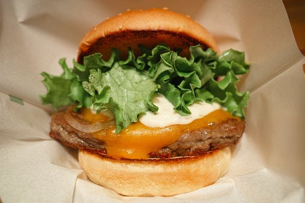

Hamburger

Description
Juicy grilled burger with cheese, onion, salted tomato,
lettuce and grilled mushrooms.
Ingredients
- Tony's
- Salt
- Lemon Pepper
- Cayenne Pepper
- Garlic Powder or Freshly Minced Garlic
- Ground Beef
- Buns
- Onion
- Cheese of choice
- Tomato
- Lettuce
- Mushrooms
- Olive Oil
Steps
- Preheat grill to 375
- Mix ground beef with seasonings, mashing well
- Season mushrooms and onions with same seasonings,
on some foil with olive oil
- Form meat into paddies
- Press thumb into middle of paddies (both sides),
to prevent puffing up in middle
- Throw foil of mushrooms, and onions on grill for 6-10
minutes, stir up flipping half way through
- Depending on thickness, cook 3-5 minutes each side
- Toast Buns 20-40 seconds each side
- Wrap paddies in foil for 3 minutes, to make extra juicy
- Slap it all on buns and start to chew